Hide Table of Contents
Hide Table of Contents
 Tutorials
About the API
Work with the API
Graphics and feature layers
Popups and Info Windows
Geoprocessor
Operations Dashboard
Create extensions
Mobile
ArcGIS Server Services
References
What's New archive
Tutorials
About the API
Work with the API
Graphics and feature layers
Popups and Info Windows
Geoprocessor
Operations Dashboard
Create extensions
Mobile
ArcGIS Server Services
References
What's New archive
Feature Layers are client side layers that access data and draw the features as vector graphics in the browser. Feature Layers can be used to create interactive visualizations. These visualizations are enhanced by some new renderers and new capabilities to existing renderers.
- Rotation
- Symbol Scaling based on distance
- Symbol Scaling based on non-distance
- Dot Density
- Scale Dependent Renderer
- HeatMap Renderer
Rotation
The rotationInfo property of a renderer defines how marker symbols are rotated. You can use rotation to depict wind direction, vehicle heading, etc. Only applied to marker symbols (based on point data).
| 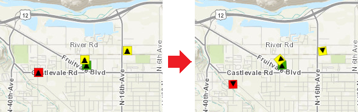 | layer.renderer.setRotationInfo({
field: "heading",
type: "geographic"
});
|
The property type defines how the angle of rotation was measured. There are two ways you can define the angle:
"geographic"- rotates the symbol from north in clockwise direction."arithmetic"- rotates the symbol from east in counter-clockwise direction.
Note that this is different from a MarkerSymbol's angle property, which defines rotation that is
applied before the symbol is offset (using xoffset and yoffset).
rotationInfo defines rotation that is applied after the symbol is offset
(with the geographic point as the origin of rotation).
View Samples: Renderer with proportional symbols and rotation | Class breaks with rotation and proportional symbols
Symbol Scaling by distance
Based on data that represents distance quantity. For example: the radius of tree canopy, the width of water mains, etc. Specifyfield and valueUnit in
setSizeInfo. Features will be
mapped according to their sizes in the real world.
| 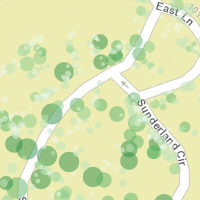 |
layer.renderer.setSizeInfo({
field: "GroundArea",
valueUnit: "feet",
valueRepresentation: "area"
});
|
Symbol Scaling by non-distance
Based on data that represents non-distance quantity. For example: the traffic count of highways, the population of states, etc. Depending on how you want to visualize your data, there are four approach you may use to scale the symbols:
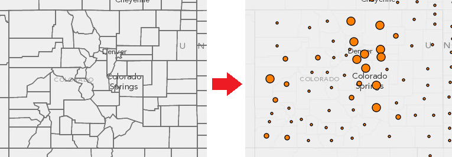
|
1. No Limits Proportional
Applied when only
minDataValue and minSize are specified. Any other symbol gets its size proportionally based on its quantity relative to minDataValue. This is the only case where the symbol sizes are truely proportional to the data. |
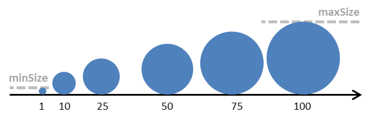
* Symbol size proportionally increases from 1 to 100.
|
layer.renderer.setSizeInfo({
field: "value",
minDataValue: 1,
minSize: 1
});
|
|
2. Proportional with Size Limits
Applied when
minDataValue, minSize, maxDataValue and maxSize are all specified. Symbol size is mapped proportionally between the range of data values across the range of symbol sizes. It gives you control over the range of symbol sizes, but the symbol sizes are not truely proportional to the data.View Samples: Proportional symbols for lines | Scale dependent renderer
|
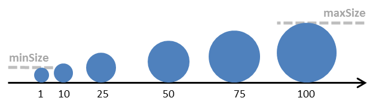
* Symbol size increases from 1 to 100, but not truely proportional.
|
layer.renderer.setSizeInfo({
field: "value",
minDataValue: 1,
minSize: 2,
maxDataValue: 100,
maxSize: 8
});
|
|
3. Outlier-friendly Proportional
Similar to 2., but the
minDataValue and maxDataValue are not the actual min value and max value of your data. You can use this approach to set cut-off points beyond which all values will be mapped at the same size. It is useful when you would like to exclude outliers. |
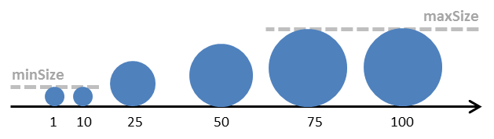
* Symbol size increases from 10 to 75.
|
layer.renderer.setSizeInfo({
field: "value",
minDataValue: 10,
minSize: 2,
maxDataValue: 75,
maxSize: 8
});
|
|
4. Graduated
Symbol size is defined with discrete class breaks. You can use
ClassBreaksRenderer to divide your data values into several classes and map each of them with the same marker symbol. If applied to a polygon layer, the symbols will be placed inside polygons, and you can use the backgroundFillSymbol property to determine how the polygons will be colored.View Sample: Renderer with graduated symbols for polygons
|
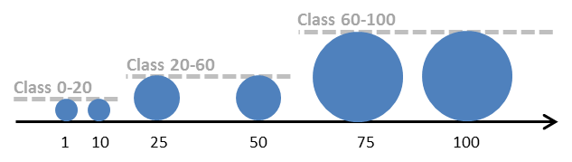 |
var renderer = new ClassBreaksRenderer(null, "value"); renderer.addBreak(0, 20, new SimpleMarkerSymbol().setSize(2)); renderer.addBreak(20, 60, new SimpleMarkerSymbol().setSize(4)); renderer.addBreak(60, 100, new SimpleMarkerSymbol ().setSize(8)); renderer.backgroundFillSymbol = new SimpleFillSymbol(); layer.setRenderer(renderer); |
Depending on the geometry type of the layer, symbol scaling affects your map differently:
| Point | Line | Polygon |
|---|---|---|
|
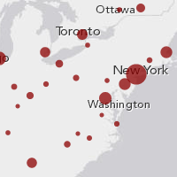
The size of marker symbol is scaled.
|
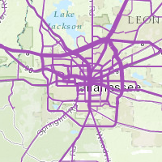
The width of line symbol is scaled.
|
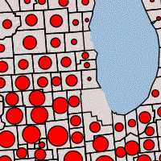
The size of the marker symbol placed in polygon is scaled.
|
Dot Density
The DotDensityRenderer visualizes a quantity in polygon with numerous randomly placed dots. The relative sparseness of the dots indicates the distribution of a discrete spatial phenomenon, such as population distribution map, crop production map, etc.
| 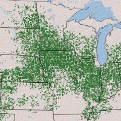 | var renderer = new DotDensityRenderer({
fields: [{
name: "Total_Emp",
color: new Color([52, 114, 53])
}],
dotValue: 4000,
dotSize: 2
});
layer.setRenderer(renderer);
|
Things to consider when making dot density maps:
- The
fieldsproperty allows you to specify multiple fields. You may utilize this property to visualize multiple variables on one map with different colors. For example, use different colors to show the distribution of various ethnic groups. dotValueanddotSizedrive the visual effects on your map. A good practice is to set the size and value of the dot so that the feature with the highest value in the layer is ~80% covered in dots.- The density on map always changes as the user zooms in or zooms out. Use the
ScaleDependentRendererto set a unique dot density renderer for each scale or zoom range, so thedotValueanddotSizecan vary across multiple scale ranges. - Dot density maps tend to break down at larger scales. Users start seeing patterns in the random distribution of the dots that do not exist in reality. For example, dot density visualizations on county datasets should only be viewed at the state or regional level.
- Dot density maps should always use equal area projections to ensure the density is based on the same area measurement everywhere on maps, although WebMercator could be acceptable at larger scales, as the exaggeration of area becomes negligible.
- Use popups to clearly communicate the actual value of the feature, so the user can explore the map visually and interactively.
View Samples: Dot density renderer | Dot density with multiple classes
Scale Dependent Renderer
The ScaleDependentRenderer defines multiple renderers for a layer, where each renderer is only applied to the layer at a specific scale range or zoom range. While other renderer types allow you to define graphics styling based solely on their attribute values, a scale dependent renderer allows you to define styling based on map scale as well.
| 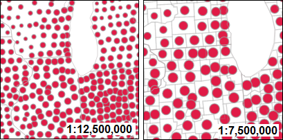 | var scaleDependentRenderer = new ScaleDependentRenderer({
rendererInfos: [{
renderer: renderer1,
maxScale: 10000000,
minScale: 20000000
}, {
renderer: renderer2,
maxScale: 5000000,
minScale: 10000000
}]
});
layer.setRenderer(scaleDependentRenderer);
|
For each renderInfo object in rendererInfos, minScale and maxScale can be replaced with minZoom and maxZoom respectively, if your map has defined LODs (Levels of Detail).
View Samples: Scale dependent renderer | Dot density renderer | Dot density with multiple classes | Renderer with graduated symbols for polygons
Heat Map Renderer
The heatmaprenderer renders point data into a raster visualization that emphasizes areas of higher density or weighted values. The beta version of this was introduced at version 3.11 and officially added at 3.12.
| 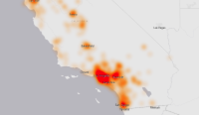 | var heatmapRenderer = new HeatmapRenderer({
field: "Magnitude",
blurRadius: blurCtrl.value,
maxPixelIntensity: maxCtrl.value,
minPixelIntensity: minCtrl.value
});
heatmapFeatureLayer.setRenderer(heatmapRenderer);
|
This renderer uses a Gaussian Blur technique to average the influence of each point out over the area determined by the blurRadius. A Gaussian blur uses a Gaussian, or Normal, distribution (also called a Bell-curve) to spread value out in vertical and horizontal directions.
The standard normal distribution
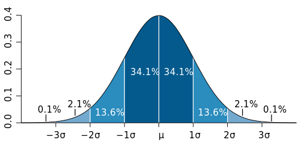This averaging function is applied horizontally and vertically to produce a blurred area of influence instead of a single specific point.

This process is repeated for each point. Each time the calculation is performed, the blurred values are added to the underlying pixels. The results are cumulative, so a pixel that has several points near it will have a higher value than a pixel with a single point in it. This accumulated value is called the intensity of the pixel. If needed, the intensity calculation can be further adjusted.
View Samples: Explore Heat Maps | Use Heat Maps
Compatibility
| FeatureLayer | Dynamic Layers | Legend | IE7, IE8 | ||
|---|---|---|---|---|---|
| Rotation
( Renderer.rotationInfo) |
Yes | Yes | N/A | Yes | Yes |
| Size
( Renderer.sizeInfo) |
Yes | No | Yes
(added at v3.8) |
Yes
(added at v3.8) |
Yes |
| Continuous Color
( Renderer.colorInfo) |
Yes
(added at v3.8) |
No | Yes
(added at v3.9; IE 7/8 cannot display colors with alpha values.) |
No | Yes
(added at v3.8) |
| Graduated Symbols in Polygons | Yes | Yes
(only with ClassBreaksRenderer) |
Yes | Yes | Yes |
| Dot Density Renderer | Yes | No | Yes
(added at v3.8) |
Yes | No |
| Scale Dependent Renderer | Yes | No | Yes | Yes | Yes |
| Heat Map Renderer | Yes | No | Yes (beginning with v3.12) | No | No |
- All available capabilities were added at v3.7 unless otherwise stated.